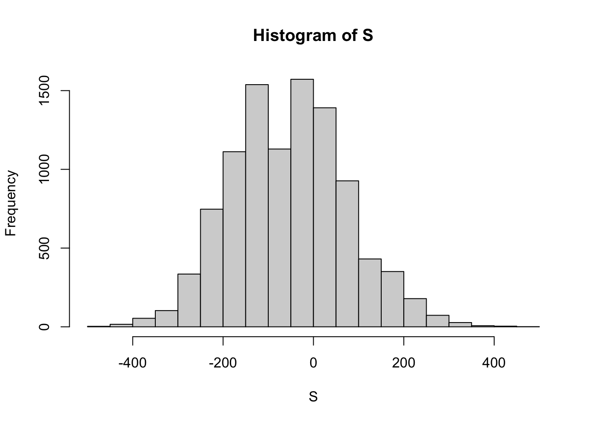
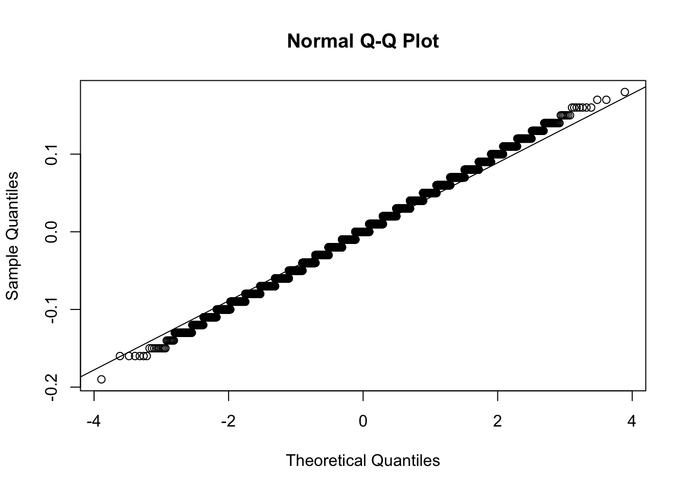
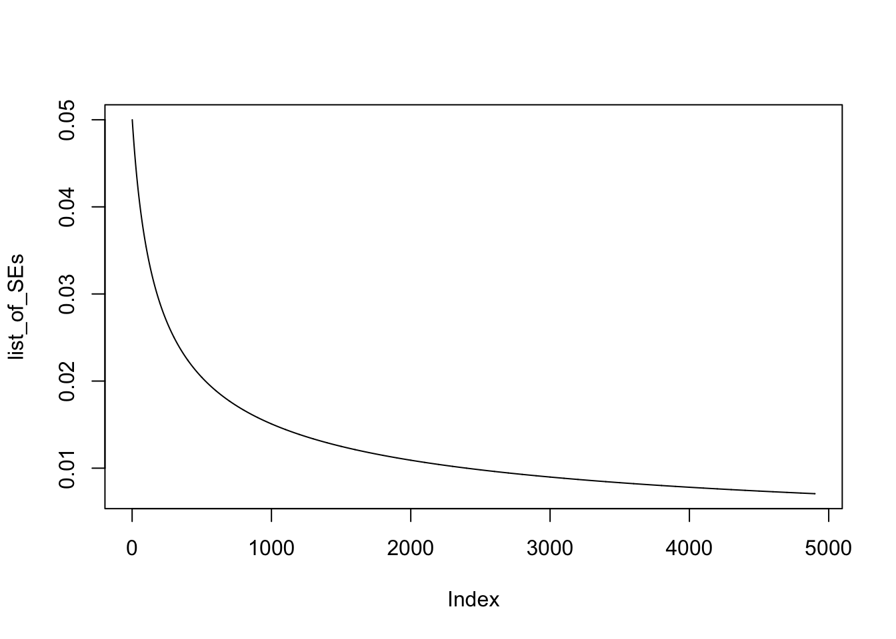
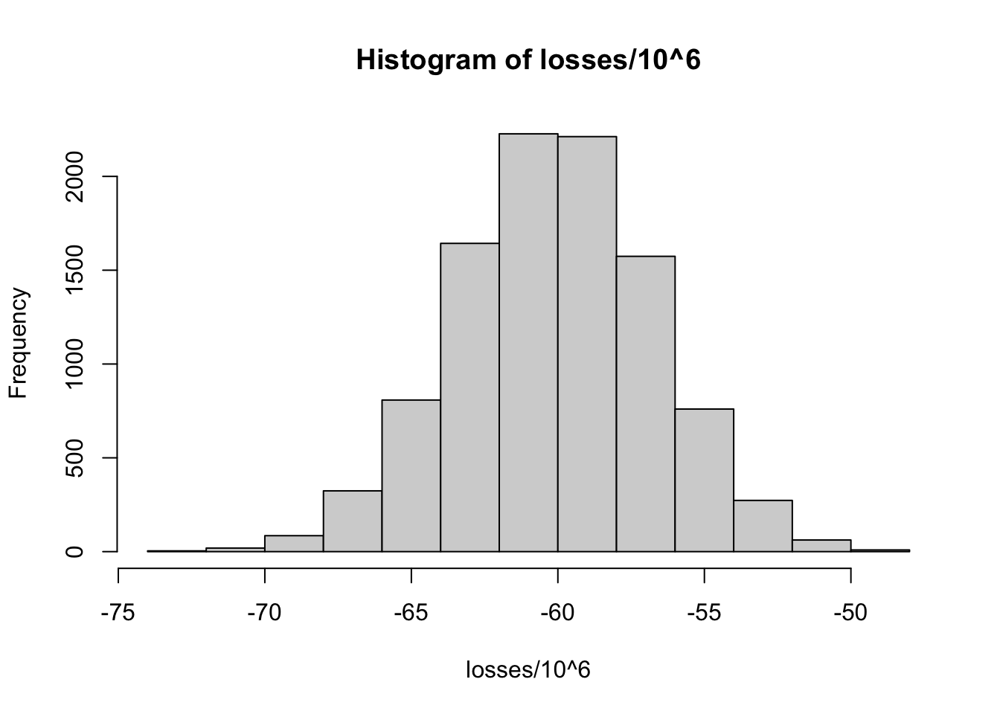

2 R Playgrounds
2.1 Expected Value and Standard Deviation
Roulette table example with Red, Black and Green. Only Green wins. Whats the probability that you get Green?
v = rep(c("Red", "Black", "Green"), c(18,18,2))
prop.table(table(v))## v
## Black Green Red
## 0.47368421 0.05263158 0.47368421This is the sampling model.
x = sample(c(17,-1), prob = c(2/38,36/38))The expected value is calculated by adding the possible value times their likelyhood together. Its formula is ap + b(1-p). The expected value for 1000 draws.
EV = 1000 * (17*2/38 + (-1*36/38))The standard error (standard deviation of random variables i.e., probability distributions). Its formula is a - b * sqrt(p * (1-p)). The standard error for 1000 draws.
SE = sqrt(1000) * (-((-1)-17) * sqrt(2/38 * 36/38))Random variable S storing the experimental values from sampling model.
set.seed(1)
S = sample(c(17,-1), size = 1000, replace = T, prob = c(2/38, 36/38))
sum(S)## [1] -10Create the experimental sampling distribution of the sample sum.
roulette_winnings = function(){
S = sample(c(17,-1), size = 1000, replace = T, prob = c(2/38, 36/38))
sum(S)
}
set.seed(1)
S = replicate(10000, roulette_winnings())
hist(S)
The mean or expected value of X?
mean(S)## [1] -52.3324The standard deviation or standard error of X?
sd(S)## [1] 126.9762The probabilty that we win?
mean(S > 0)## [1] 0.3391n = 1000
pbinom(500, size = 1000, prob = 1/19) # ??## [1] 12.2 Theoretical and Experimental Standard Error
The sample statistics: 0.45 “democrats and a sample size of 100.
p = 0.45
n = 100The theoretical standard error for p = 0.45 and sample size n = 100.
SE = sqrt(p * (1 - p)) / sqrt(n)
SE## [1] 0.04974937Now we can experimentally proof this expected standard error by running a Monte Carlo simulation. We basically create a sampling distribution of size 10000 of the sample proportions with p = 0.45 and n = 100. Only that we lastly subtract p to find out the actual error.
test_errors = replicate(10000, mean(sample(c(1,0), replace = T, size = n, prob = c(p, (1 - p)))))
# Distribituon of errors
test_errors = test_errors - p
# The standard deviation of the errors
sd(test_errors)## [1] 0.04960875# Very close to the theoretical standard error
SE## [1] 0.04974937And the error distribution is approximatly normal.
qqnorm(test_errors);qqline(test_errors)
2.3 Sample Size Resulting in 0.01 SE
The maximum SE in relation to proportions is with p = 0.5. Therefore we will take this worst case scenario case to calculate our goal, the required sample size to get a standard error arround 0.01. We can calculate a list of SE based on sample sizes 100 to 5000.
p = 0.5
n = 100:5000
list_of_SEs = sqrt(p * (1 - p) / n)
head(list_of_SEs, 20)## [1] 0.05000000 0.04975186 0.04950738 0.04926646 0.04902903 0.04879500
## [7] 0.04856429 0.04833682 0.04811252 0.04789131 0.04767313 0.04745790
## [13] 0.04724556 0.04703604 0.04682929 0.04662524 0.04642383 0.04622502
## [19] 0.04602873 0.04583492When plotting the list of standard errors we can see at what sample size we will reach a standard error of around 0.01: with a sample size of around 2.500.
plot(list_of_SEs, type = "l")
2.4 Bank and Loans
# Number of loans
n = 10000
# Probability of default
p = 0.03
# Loss per single forclosure
loss_per_forclosure = -200000
# Interest_rate
x = 0
# Random variable S storing defaults = 1 and non defaults = 0
S = sample(c(0,1), prob = c(1-p, p), size = n, replace = T)
head(S, 100)## [1] 0 0 0 0 0 0 0 0 0 0 0 0 1 1 0 0 0 0 0 0 0 0 0 0 0 0 0 0 0 0 0 0 0 0 0 0 0
## [38] 0 0 0 0 0 0 0 0 0 0 0 0 0 0 0 0 0 0 0 0 0 0 0 0 0 0 0 0 0 0 0 0 0 0 0 1 0
## [75] 0 0 0 0 0 0 0 0 0 0 0 0 0 0 0 0 0 0 0 0 0 0 0 0 0 1# Expected value for 10000 loans
sum(S * loss_per_forclosure)## [1] -62600000# Monte-Carlo simulation amount
B = 10000
# Simulation
losses = replicate(B, {
S = sample(c(0,1), prob = c(1-p, p), size = n, replace = T)
sum(S * loss_per_forclosure)
})
# Losses distribution from simulation
hist(losses / 10^6)
# Expected value of S
EV = x*(1-p) + loss_per_forclosure*p
EV## [1] -6000# Standard error of S
SE = abs(x - loss_per_forclosure) * sqrt(p * (1-p))
SE## [1] 34117.44# Loans of 180000
x = 180000
# loss_per_forclosure*p + x * (1-p) = 0
# Find out x!
x = - (loss_per_forclosure * p / (1 - p))
x## [1] 6185.567# Interest of 6185.57 dollars for each loan needed to get on average 0 in total back as the bank.
EV = loss_per_forclosure * p + x * (1 - p)
EV # Correct!## [1] 02.5 Real Polling Data
# library(dslabs)
data("polls_us_election_2016")
# Exclude observations that are too old.
polls <- polls_us_election_2016 %>%
filter(enddate >= "2016-10-31" & state == "U.S.")
head(polls, 5)## state startdate enddate pollster grade samplesize
## 1 U.S. 2016-11-03 2016-11-06 ABC News/Washington Post A+ 2220
## 2 U.S. 2016-11-01 2016-11-07 Google Consumer Surveys B 26574
## 3 U.S. 2016-11-02 2016-11-06 Ipsos A- 2195
## 4 U.S. 2016-11-04 2016-11-07 YouGov B 3677
## 5 U.S. 2016-11-03 2016-11-06 Gravis Marketing B- 16639
## population rawpoll_clinton rawpoll_trump rawpoll_johnson rawpoll_mcmullin
## 1 lv 47.00 43.00 4.00 NA
## 2 lv 38.03 35.69 5.46 NA
## 3 lv 42.00 39.00 6.00 NA
## 4 lv 45.00 41.00 5.00 NA
## 5 rv 47.00 43.00 3.00 NA
## adjpoll_clinton adjpoll_trump adjpoll_johnson adjpoll_mcmullin
## 1 45.20163 41.72430 4.626221 NA
## 2 43.34557 41.21439 5.175792 NA
## 3 42.02638 38.81620 6.844734 NA
## 4 45.65676 40.92004 6.069454 NA
## 5 46.84089 42.33184 3.726098 NAThe first poll. Create a confidence interval.
n = polls$samplesize[1]
x_hat = polls$rawpoll_clinton[1]/100
se_hat = sqrt(x_hat * (1 - x_hat) / n)
cf = c(x_hat - 1.96 * se_hat, x_hat + 1.96 * se_hat)
rm(x_hat, se_hat)Create columns for x_hat, se_hat, lower and upper confidence bounds. Select only the relevant columns.
polls = polls %>%
mutate(x_hat = polls$rawpoll_clinton/100,
se_hat = sqrt(x_hat * (1 - x_hat) / samplesize),
lower = x_hat - 1.96 * se_hat,
upper = x_hat + 1.96 * se_hat) %>%
select(pollster, enddate, x_hat, se_hat, lower, upper)Create a hit column indicating whether our confidence intervals included our true parameter, the final vote count for Clinton 48.2.
polls = polls %>%
mutate(hit = ifelse(0.482 > lower & 0.482 < upper, TRUE, FALSE))
mean(polls$hit)## [1] 0.3142857